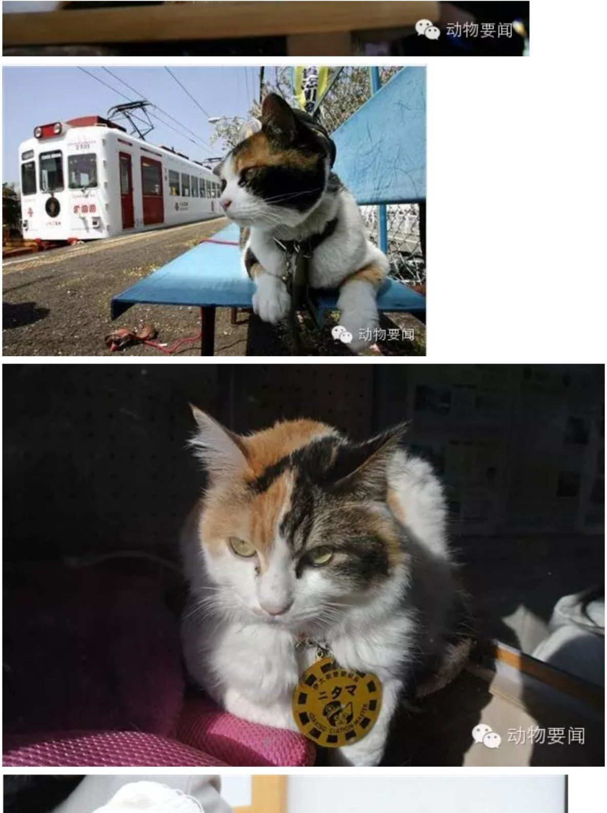
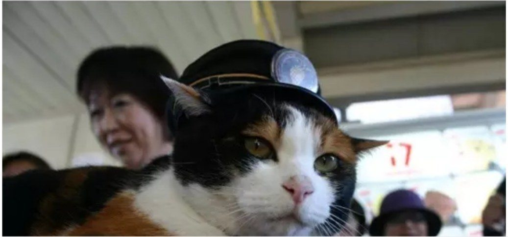

日本和歌山电铁三花猫站长小玉去世 享年16岁
据日本共同社报道，和歌山电铁公司6月24日宣布，掀起动物站长热潮的贵志川线贵志站雌性花猫站长“小玉”去世。小玉是在22日晚上离开大家的，她在约两个月前度过了16岁生日，相当于人类的80岁高龄。
小玉2007年1月出任站长。因为讨人喜欢又少见，她吸引了许多游客，使原本亏损的线路一下子成为人气景点，2013年1月升任社长代理。2005财年约192万人次的乘客数，到2014财年增至227万人次。
和歌山电铁于28日在贵志站为小玉举行葬礼，治丧委员长由小岛光信社长担任。据称，去世前一天小岛社长来探病时，小玉还站起来精神饱满地“喵”了一声。
和歌山县知事仁坂吉伸表示：“她作为旅游巨星在国内外享有人气，为我县旅游振兴贡献良多。我饱含深切的悲痛和万分感谢。”


转自环球网 · 据日本共同社